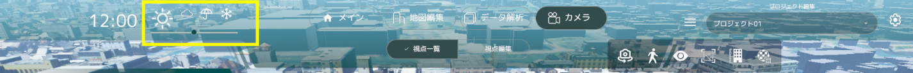

グローバルナビ各種機能
画面上部グローバルナビゲーションの各種機能を記載しています。
気象変更機能

- 3D ビューの気象変更が可能です（晴れ・曇り・雨・雪）
時間帯変更機能
- スライダーで変更すると時間帯の変更を行うことが出来ます。
サブメニュー機能表示ボタン

- 下記画像にあるボタンをクリックするとヘルプ機能が表示されます。
＜サブメニュー＞カメラ自動回転機能
- 現在の視点を中心にカメラが自動回転するようになります。
＜サブメニュー＞歩行者視点モード機能

- 歩行者視点ボタン押下し、３ D 上をクリックすると、カメラが歩行者視点（約 1.7m 標準）に切り替わります。
歩行者視点画面
歩行者視点になると各種視点移動 UI が表示されます。
- 歩行者視点：視点の高さ調整が行えます。
- 移動：キーボード W・A・S・D ボタンで移動がおこなえます。UI ボタン押下でも移動が可能です。
- 速度：移動速度を設定出来ます。
- 視点回転：上下左右の視点回転が行えます。１回押下で 45 度回転します。
- 歩行者視点モード終了ボタン：押下するとモードが終了し、俯瞰視点に戻ります。
＜サブメニュー＞ UI 表示・非表示機能

画面左右にあるユーザーインターフェースの表示/非表示が出来ます。
＜サブメニュー＞スクリーンショット機能

現在の視点をスクリーンショットすることが出来ます。
＜サブメニュー＞建物高さ表示機能

現在の視点から見える建物の高さを表示することが出来ます。
＜サブメニュー＞ UI 表示・非表示機能

建物のテクスチャ切り替え表示することが出来ます。